INVOICE COST$119.66
Work / IBM × Cardinal Health
 ×
×Jarvis: the design system behind a pharmacy storefront
Built from scratch at IBM for Cardinal Health's Vantus HQ, then run as a product while requests grew five times over.
- 40+
- components, every state drawn
- 110
- colours in 11 ramps
- 5×
- more tickets handled in a year
- 1 → 7
- people on the system

01 the client:
The company behind the pharmacy shelf
Cardinal Health distributes pharmaceuticals and medical products, and gives healthcare providers the data to run better. Its customers order through its platforms every day.
- ~90%
- of U.S. hospitals
- 60,000+
- U.S. pharmacies
- 10,000+
- specialty offices and clinics
- 23M+
- patients reached by its adherence tools
In 2022 Cardinal Health was in the middle of a rebrand, and retiring the ordering tools its customers had used since the 90s. IBM was brought in to build the replacement: Vantus HQ, one personalised storefront where pharmacies and hospitals order products, track shipments, manage contracts and see their rebates.
The work was split across squads, each owning part of the product: home, catalogue, orders, insights. IBM's Columbus studio led strategy, research and the day-to-day partnership with the client. The design team in India, five to six designers, designed the product. Aniket owned the design system, with two designers beside him.
Client
Cardinal Health
Product owners, brand, engineering squads and QA, all moving to the new brand.
IBM, U.S.
Columbus studio
Strategy, research and the day-to-day partnership with the client.
IBM, India
Design team
Five to six designers across squads, and the design system: one owner and two designers.
02 the problem:
A new brand, with nothing to hold it together
The rebrand changed how Cardinal looked. It didn't change how its screens were made.
Each squad designed its own buttons, tables and forms, so the same element looked different from page to page, and screens from the 90s sat right beside new ones. A customer moving from the home page to their orders could feel the seams.
The tools made it worse. The Adobe XD libraries broke so often that updates were frozen to spare designers the rework. Changes made in Storybook didn't always reach production. Decimal font sizes and a custom grid had QA flagging work that was built exactly as specified, and the same bugs kept coming back.
How might we give every squad one source of truth, in design and in code, that can grow without breaking what's already built?
Every squad designed its own buttons, tables and forms
One system every squad builds from
Adobe XD libraries broke so often that updates were frozen
A Figma library with colour variables
What design approved didn't reach production
Versioned Storybook, checked against Figma
Four questions every request had to answer
Is it versatile enough?
Will it meet the needs of every squad, not just the one asking?
Who uses this today?
Which screens and squads would a change reach?
Can it improve without breaking?
Is there room to change it without undoing work already shipped?
Is the benefit real?
Does it help the team and the project, or is it just nice to have?
03 how it unfolded:
From one problem to a team of seven
The system began with one complaint, inconsistent screens, and grew into a product with its own backlog and team.
- 01
Audit
What every squad had built, and where it broke
- 02
Foundations
Colour, type, spacing and icons
- 03
Tokens
Colours named for what they do
- 04
Components
40+, every state drawn
- 05
Run it
Intake, versions, changelog, training
A problem, then a first release
The first months went into choosing tools, defining the first components and agreeing what the system would support.
Team: sharedA dedicated owner
Aniket took Jarvis on full time, to manage and maintain it, with the wider design team helping where it could. About 120 tickets.
Team: 1Squads adopt Jarvis
Every squad now built from the library, and every new screen turned into requests: a variant, a fix, a question.
Requests jumpA central team of seven
The system became a dedicated group, still welcoming help from squads as bandwidth allowed.
Team: 7Close to 900 tickets
Five times more work handled than a year before, most of it done.
5× throughput
04 the work, in twelve frames:
Swipe through it
From the colour ramps to the screens squads shipped. Select any frame to see it full size.


01 / 12
05 colour:
One brand red became 110 colours
The rebrand handed over Cardinal Red and a few brand colours. Product UI needs far more: hover and pressed states, quiet backgrounds, status colours that work on white. Hover any swatch; every value is the real one.
50100200300400500600700800900
red
green
yellow
teal
blue
magenta
violet
purple
orange
neutral
brown
06 type and space:
A calm scale for dense ordering screens
Roboto on a 1.125 scale from a 16px base, rounded to whole pixels so QA could match the build.
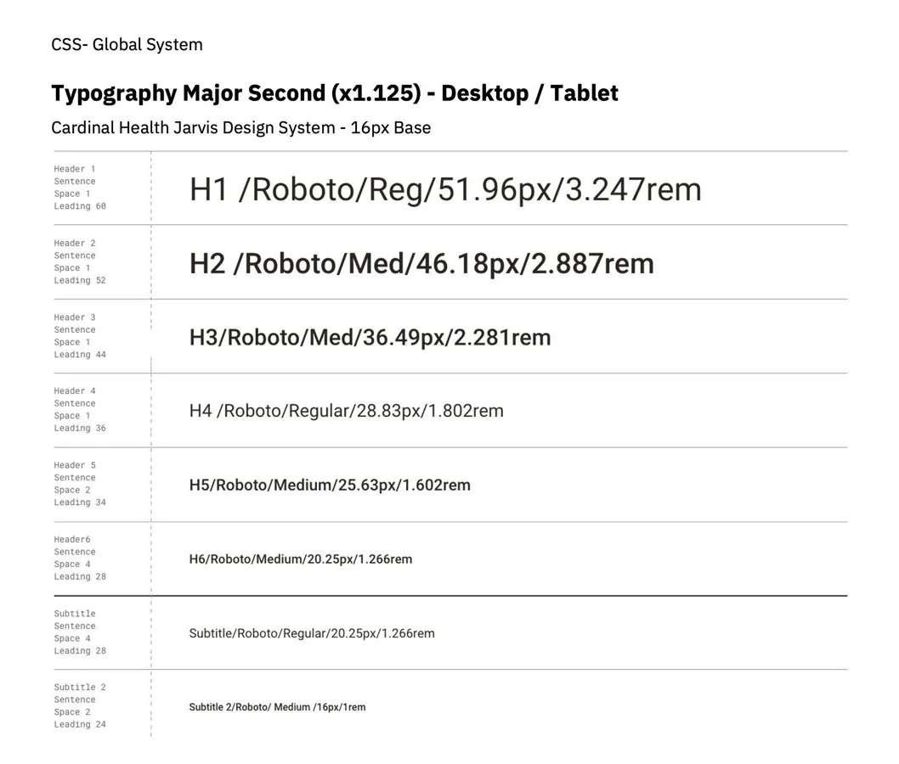
The fix QA asked for
51.96px
52px
A pure scale rendered blurry. Whole pixels ended the rework.
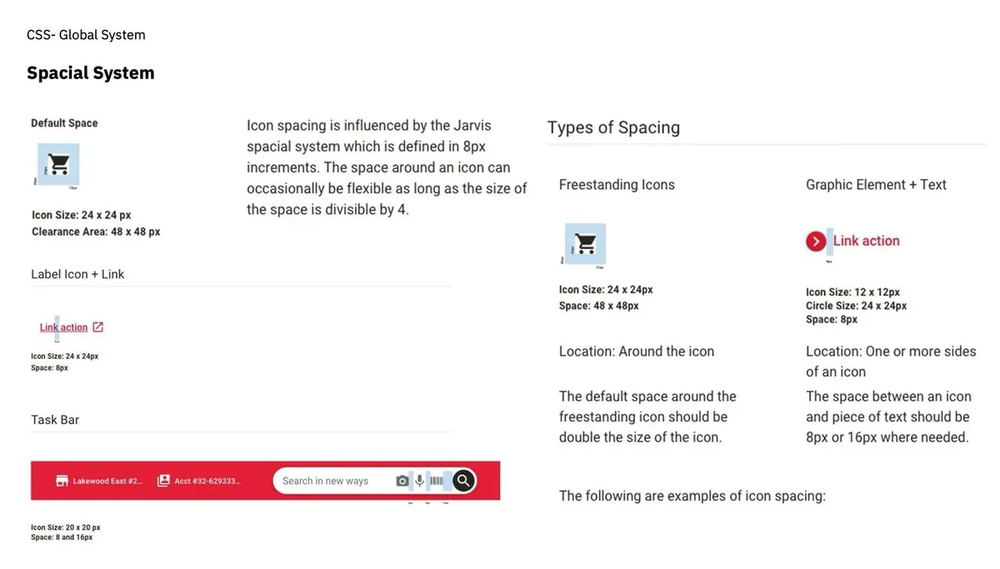
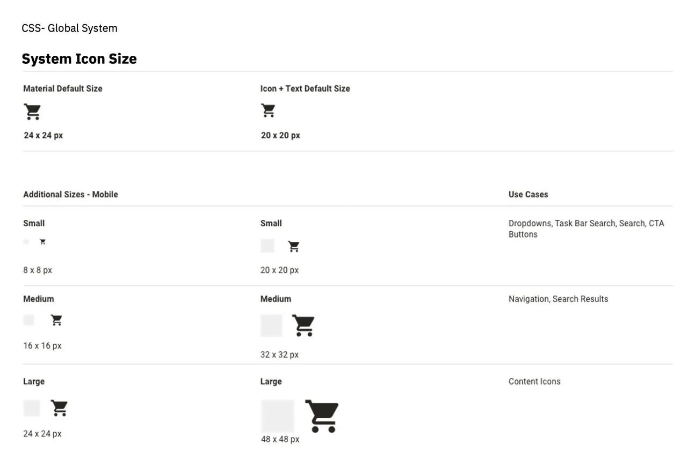
07 tokens:
Colours named for what they do
Components used a mix of classes and hard-coded values; changing one badge meant editing every badge by hand. Now squads use a name that says what a colour is for, and the name points at a ramp step.
Value
#E41F35
Stored once.
Primitive
red-500A step in a ramp.
Semantic
action · primary · surface
color-action-primary-surfaceNamed for what it does.
Component
Add to cart
button / primaryWhat squads place.
08 components, live:
Try the real thing
Rebuilt in code from the Jarvis specs. Hover and press Add to cart to see its tokens change.
Medical Village Apothecary · #6293333444Search for products
Buttons
Inputs
Quantity
Selection
Alerts
Success. Order 162620413 was placed.
Info. Prices update at 9:00 AM.
Warning. 1 shipment is delayed.
Error. 3 items need a backorder.
Product card
Tabs, badges, pagination
In stockRecommendedExceptionDelayedContract
1 of 5
46components across six families, from buttons to the global header
- Primary button
- Secondary button
- Tertiary button
- Icon button
- Link
- Option group
- Text input
- Text area
- Dropdown
- Native select
- Quantity stepper
- Phone number
- Search field
- Date picker
- Calendar
- File upload
- Drag and drop
- Checkbox
- Radio button
- Toggle
- Chip
- Inline alert
- Banner
- Toast
- Badge
- Tooltip
- Status indicator
- Progress bar
- Global header
- Account bar
- Menu
- Mobile menu
- Tabs
- Vertical tabs
- Breadcrumb
- Pagination
- Footer
- Mobile footer
- Data table
- Accordion
- Avatar
- Product card
- Metric card
- Chart card
- Carousel
- Order summary
09 every state, drawn:
One layout for every component page
Variants in a grid, states across the top, sizes down the side, then links to Storybook and Zeplin.

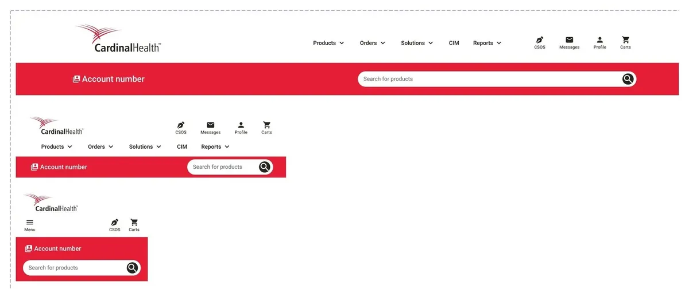
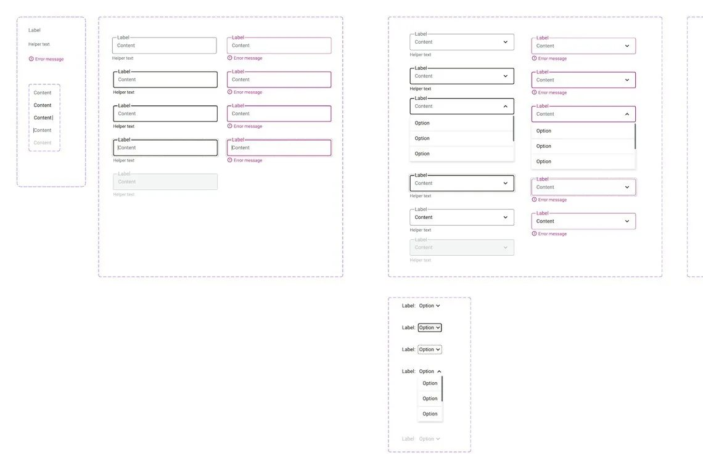
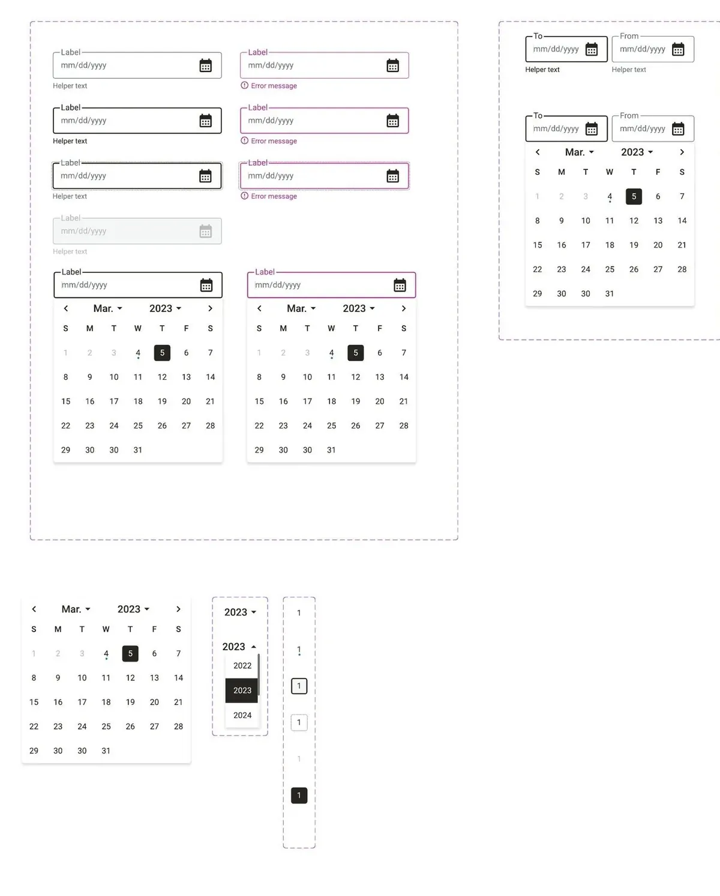
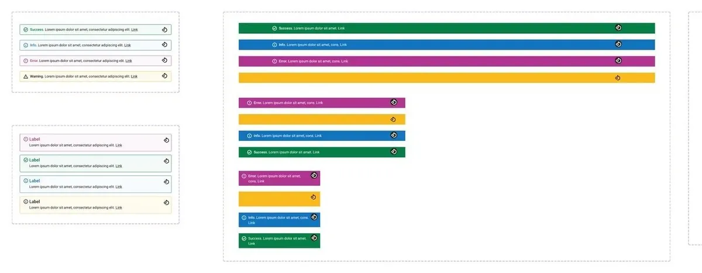
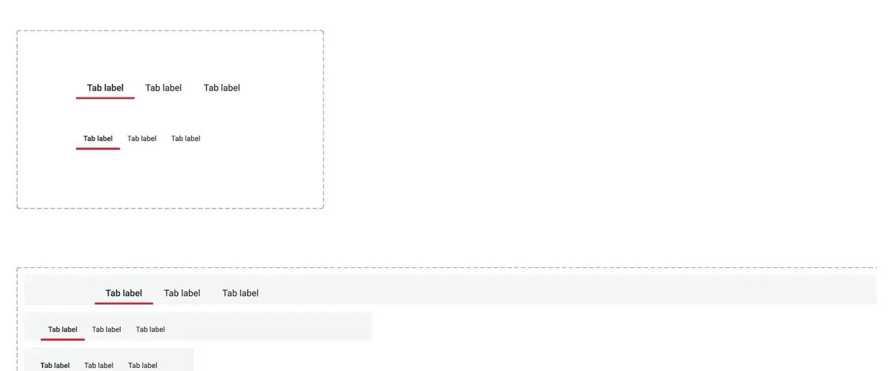
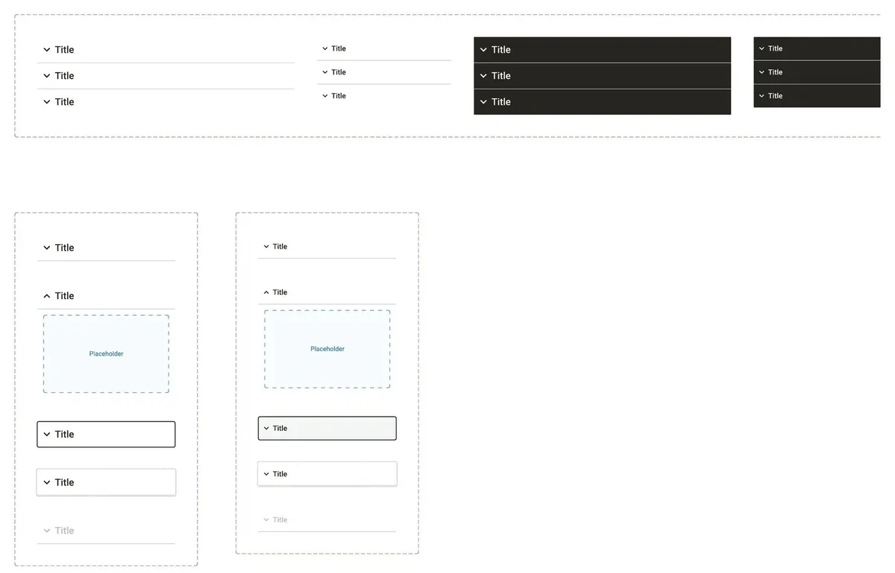
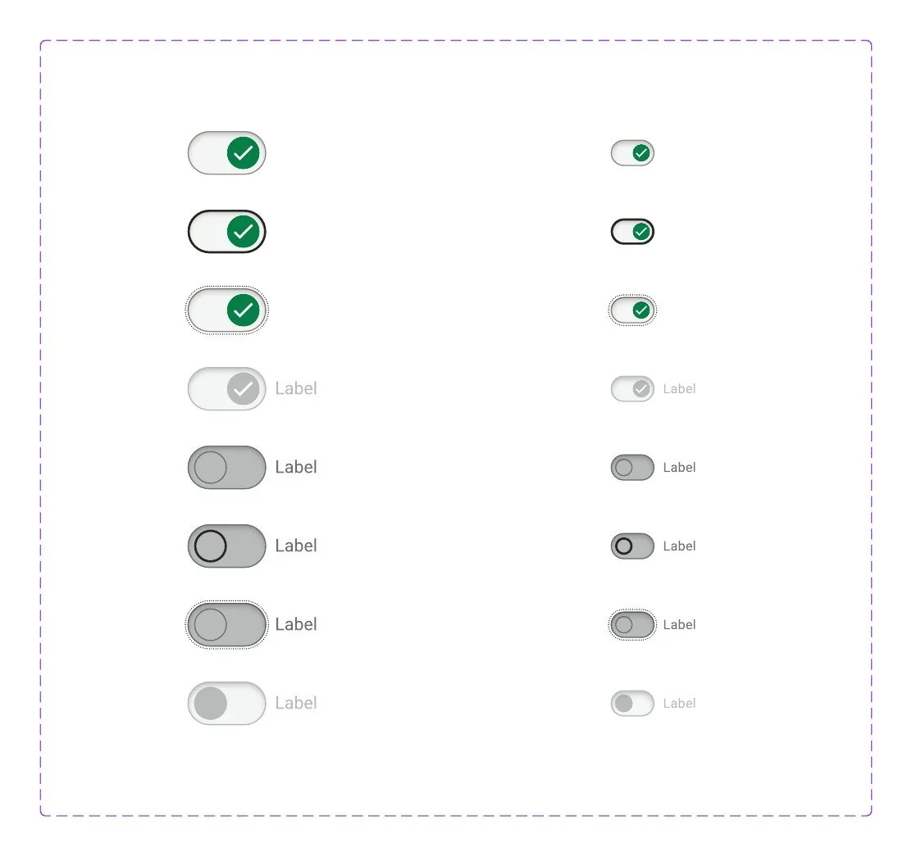
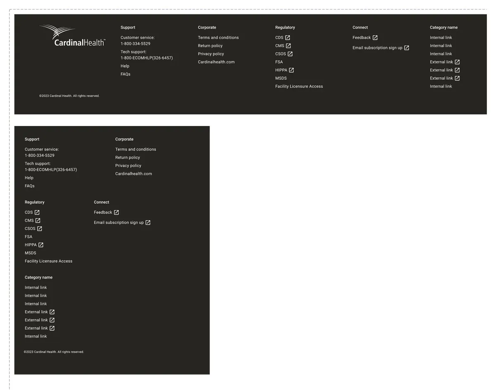
10 in the product:
Five squads, one storefront
Home, catalogue, orders and insights were owned by different squads. Because they all built from Jarvis, Vantus HQ reads as one product.
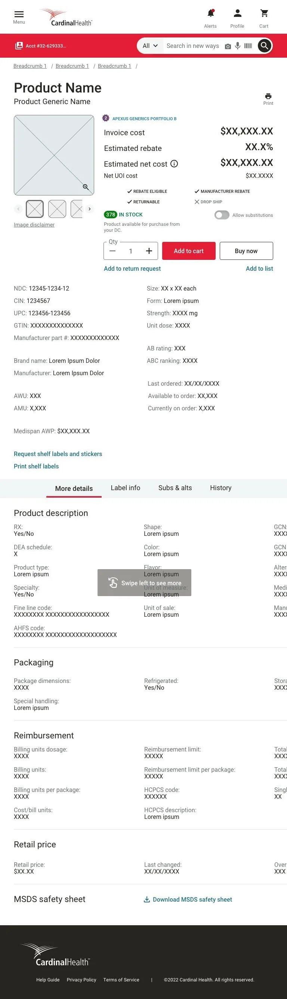
Pick a screen, then scroll inside the frames. Screens use sample data.
11 the bottleneck:
When adoption made the system the slowest step
Shipping Jarvis was the start. Every screen squads built turned into requests, and the system went from a side project to a product with customers.
Before~120
tickets when Jarvis got a full-time owner, Sep 2022
After~900
tickets by Oct 2023, most of them done
Throughput5×
more work handled in a single year
Team1 → 7
people on the system in four months
What went wrong first
Squads waited on us. As a team of one, Aniket prioritised with what he knew at the time. More squads meant more work that couldn't move until the system did.
Maintenance mode. Rushed fixes for urgent requests, broken XD libraries and too few people left design and technical debt, and little time for anything new.
Answers lived in one head. Much of the day went into answering the same questions and chasing updates. The designers needed it written down.
What we put in place
A defined workflow for design, development and QA, with a definition of done for every step. Clear rules for what goes into Jarvis, who decides and how squads contribute. Backlog refinement every sprint with the project manager and team lead, so work landed in the order squads needed it. One place for questions, so answers could be reused. And a design system site in Confluence, with playbacks and reviews built from designers' feedback.
A system is a product. It needs planning, a backlog and a roadmap, not just a library.
12 a request's journey:
From a Jira ticket to a versioned release
Every change, big or small, took the same path. Here is what one looked like, with the statuses it moved through and the release note at the end.
- Backlog
- Audit
- Design
- Design review
- Tech review
- Ready for dev
- In Storybook
- QA
- Owner check
- Released
JARVIS-412In QAQuantity stepper: add an error state
- Requested by
- Orders squad
- Need
- Customers can enter more than a contract allows; the field gives no warning
- Audit
- Used on product, cart and quick order: 3 squads, 11 screens
- Design
- Error border red-500, helper text, desktop and mobile
- Handoff
- Annotated in Figma, linked to Zeplin
- Build
- Storybook, next release
Illustrative. The fields follow the Jarvis workflow; the ticket itself is an example.
Jarvis · Storybook releaseChangelog for developers- AddedQuantity stepper: error state with helper text
- ChangedType scale rounded to whole pixels (51.96px → 52px)
- FixedTabs: active underline uses red-500 on grey backgrounds
- BreakingGrid: custom grid replaced by the agreed 12-column grid
Illustrative entries in the format of the automated changelog. Every structural change got a new Storybook version, so dev and QA could match a build to its handoff date.
Months in, it turned out that structural changes in Storybook weren't reaching production, so QA kept flagging work. With engineering, every structural change got its own version. A changelog just for developers recorded every update, and was later automated.
- 01
Request
A Jira ticket with the squad's need
- 02
Audit
Who uses it, what could break
- 03
Design
Every state and breakpoint
- 04
Review
Design and copy, then tech
- 05
Build
In Storybook, from annotations
- 06
QA
QA, then the owner's own check
- 07
Release
A version and a changelog
13 what changed:
Consistent, faster, and in step with code
Consistency
One look
Home, catalogue, orders and insights from the same 40+ components.
Throughput
5× tickets
Close to 900 by October 2023, planned with squads every sprint.
Quality
Design = code
Storybook versions and a changelog cut the work QA flagged.
Team
1 → 7
From one owner to a central team, with docs on Confluence.
01
A system is a product: it needs a backlog and a roadmap, not just a library.
02
A component isn't done when Figma approves it. It's done when the build matches.
03
People adopt what they help shape. Share the ownership.
14 for your team:
The same playbook, as a studio engagement
Each step of this case study maps to how we work with clients now.
2 weeks, fixed
Audit
$1,500
In this case studyThe four questions every Jarvis request had to answer, run across your library.
See what's included6 weeks, fixedMost teams start here
Foundations
$5,900
In this case studyRamps with contrast built in, purpose-named tokens and your core components, like Jarvis.
See what's includedMonthly, pause any time
Partner
$2,900/mo
In this case studyRun it as a product: intake, versions, a changelog and planning with your squads.
See what's includedThe work above was done by our founder as an IBM employee. Layer One now runs the same method as a studio, for product teams of any size.
Led by Aniket Pandey as design system owner at IBM (2022–23), with two IBM India designers, the IBM Columbus studio, and Cardinal Health's product, engineering and QA teams. This is IBM client work done as an employee, not Layer One client work. Images belong to Cardinal Health and IBM and are shown for portfolio purposes; screens use sample data. Tickets and changelog entries marked illustrative are examples in the format the team used.